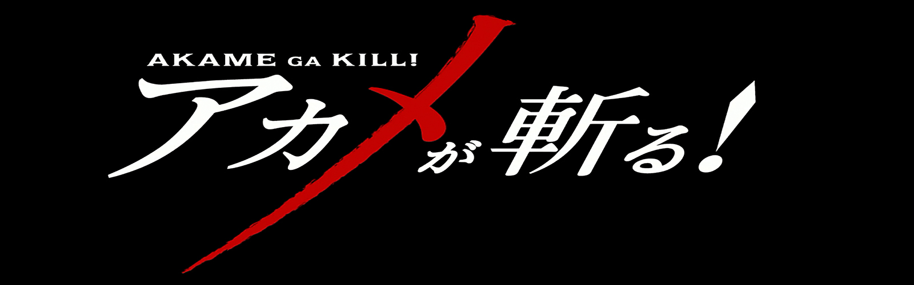
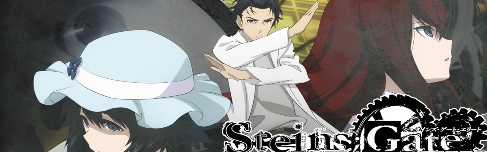
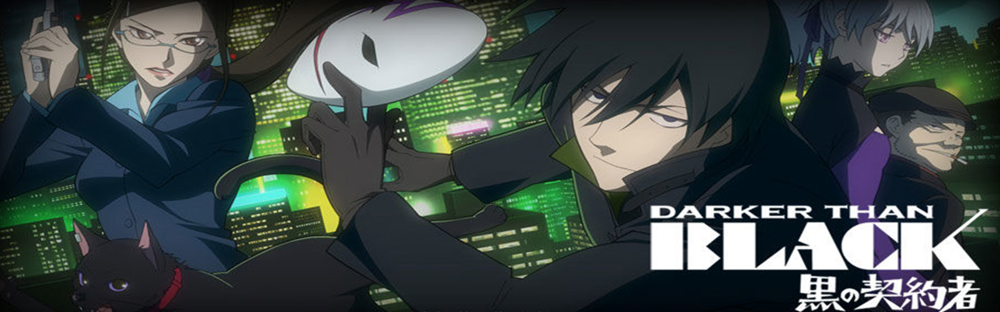

El mejor sitio para ver y descargar animes.
Peliculas NUEVAS

Los hermanos Edward y Alphonse Elric continúan la búsqueda de la Piedra Filosofal con la esperanza de restaurar sus cuerpos, que se perdieron cuando intentaron utilizar sus habilidades en alquimia al tratar de resucitar a su madre fallecida.
Una niña llamada Riko y su amigo Reg, un robot, viajan a un lugar extremadamente peligroso, al que se conoce como el Abismo, en busca de la mamá de Riko.
La historia comienza con Eren Jaeger quien vive de forma pacífica con su familia, su hermana adoptiva Mikasa Ackerman, y su único amigo Armin Arlert. ... En la batalla subsiguiente, Eren logra salvar a Armin de ser comido por un Titán a costa de ser devorado.
La historia se centra en el joven Allen Walker, un exorcista, durante un imaginario siglo XIX en Europa. Allen se convierte en miembro de la Orden Negra, una organización religiosa integrada por exorcistas de todo el mundo, la cual está vinculada al Vaticano.
Tatsumi es un chico del campo que llega a la capital del Imperio para alistarse en el ejército con la intención de ascender rápidamente, ganar dinero y salvar a su pueblo del hambre debido a los grandes impuestos que tienen que pagar. Pero al llegar a la ciudad se da cuenta de que no todo es como él esperaba.
El autoproclamado científico loco, Rintaro Okabe, va a un seminario sobre el viaje en el tiempo con su amiga, Mayuri Shiina. Una vez allí, conoce a una chica llamada Kurisu Makise que afirma haberlo conocido 15 minutos antes, a pesar de que es la primera vez que él la ve.
Darker than black nos abre las puertas a un mundo post-apocalíptico en donde el fúnebre ambiente de una gran ciudad dañada por las Hell's Gate, intenta desenlazar la verdad después de que nacieran los contratistas y los dolls (marionetas sin libre albedrío ni sentimientos).
Saitama es un poderoso superhéroe calvo que derrota fácilmente a los monstruos u otros villanos con un único golpe de su puño. Debido a esto, Saitama ha encontrado aburrida su fuerza y siempre está tratando de encontrar rivales más poderosos que le puedan igualar.
La serie narra las aventuras de un adolescente llamado Ichigo Kurosaki, un estudiante de quince años que tiene la habilidad de interactuar con los espíritus. Una noche, Ichigo se encuentra con una Shinigami (dios de la muerte) llamada Rukia Kuchiki.
Mas animes proximamente...